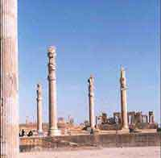

| |
به نظر باستان شناسان، كف تالار احتمالاً از آجر (شايد دو آجر روي هم با ملاط زفت، چون كف تالار سنگ سياه) پوشيده شده بوده است.
تاكنون هيچ نشاني از ستونهاي سنگي به دست نيامده است. احتمال مي رودكه مغز ستونها از چوب بوده و شايد دور تا دور آنها چون كاخ سنگ سياه آجر چيني شده و چندين لايهي گچ بر روي آنها كشيده شده كه رويهي بيروني اين پوشش رنگ آميزي شده بوده است. نشانههاي پراكندهي اين گونه ستون سازي كم و بيش به دست آمده است، اما اين يافتهها چندان نيستند كه بتوان با اطمينان تمام آن را پيشنهاد نمود. متأسفانه از خاك چندين و چند تپه بردك سياه براي كشاورزي و كاشت درختان خرما استفاده شده است كه نياز به كند و كاو بيش تر تا دست يابي به يافته ها و نشانههاي مطمئن تر كاملاً محسوس است.
همچنين تعداد قابل ملاحظهاي چشم عقاب (از سنگ سياه و آهك)، پر عقاب، دندان نيش شير، بخشهايي از پوزهي شير (از سنگ آهك) و يافتههايي اين گونه به دست آمده است كه از همهي آنها براي ظريف كاري سر ستون هايي به شكل شير يا عقاب يا نقوش برجستهي فروهر مورد استفاده قرار ميگرفته است. ديوارهاي تالار آپاداناي بردك سياه از چينه با پوشش بيروني گچ (چاري) بوده كه رنگ سبز مغز پستهاي بسيار دل انگيزي آن ها را آراسته و رنگين مينموده است.
4 قطعه طلاي هخامنشي در حاليكه چينخورده بودند در كنار يكي از پايه ستونهاي تالار مركزي كاخ هخامنشي بردك سياه كشف شدند. طلاها به نحوي چينخوردهاند كه به اعتقاد باستانشناسان كاملا عمدي بوده و به همين دليل اهميت راز گشايي آن نيز بيشتر ميشود. به اعتقاد ايشان اين چهارقطعه طلا ميتواند كتيبهاي از دوره جد كوروش كبير يا بخشي از روكش در يا يك تاج شاهي باشد.
كاوشگران بردك سياه، تنها يك چهارم از يك آپادانا را كاوش كرده اند. اين آپادانا مي بايست يك تالار مياني با 36 ستون (6 رج 6 تايي) و دست كم سه ايوان در سه سوي آن باشد كه همهي آن ها در زير نخلستانهاي مدفون شده اند.
بازگشت
|
|
در اواسط هزاره دوم پيش از ميلاد، اقوامي از آسياي مركزي كه خود را آريايي مي ناميدند، از شمال درياي خزر وارد سرزميني شدند كه بعدها ايران نام گرفت. گروهي به نام پارس ها در قسمت هاي جنوبي مستقر شدند كه در نهايت سلسله هخامنشي را تاسيس كردند.
كاخ بردك سياه نخستين بار در سال 1356 در منطقه ي «دورودگاه» دشتستان كشف گرديد كه ديرپايي و ماندگاري شاهان اين سلسله را قطعيت ميبخشد.
باستان شناسان اين كاخ را مهمترين و ارزشمندترين اثر معماري هخامنشيان در بين تمام آثار معماري شناخته اند.
بخش كاوش شده در برگيرندهي 4 رج چهارتايي پايه ستون است كه تنها 13 پايه ستون از 16 پايه ستون آن كم و بيش بر جاي روز نخستين بودند. از سه پايه ستون ديگر تنها سنگهاي پي آن ها به دست آمدند.
هر پايه ستون كاخ بردك سياه شامل سنگ سياه زيرين، با رويه ي مربع است كه بر روي آن سنگ آهكي متورق سپيدي قرار دارد. اين دو سنگ چندان استادانه به يك ديگر چسبيده و يك پارچه شدهاند كه گويي يك سنگ به نظر ميآيند. بر روي اين دو سنگ، سنگ آهكي سپيد ديگري است كه به گونهي پلكاني بر روي سنگ مياني قرار گرفته است. بر روي اين نيز شالي ستون مدوري است با تراشهاي افقي قاشقي شكل. متأسفانه هنوز در دو فصل كاوش اين كاخ، يك نمونهي كامل از شالي ستون و سنگ كوچك زير آن به دست نيامده است.
در قسمتي از اين اثر، سنگ درگاه آهكي سپيد رنگي است كه بخشهايي از آن شكسته است. اين سنگ كه تراشي ماهرانه دارد، در دو سوي رويهي آن سوراخ هايي است گود و فرو رفته به گونهي مادگي كه دو سنگ دو سوي درگاه بر روي آن چفت و بست مي شده است. از سنگ هاي دو سوي درگاه هنوز نشاني به دست نيامده است. 
|
|